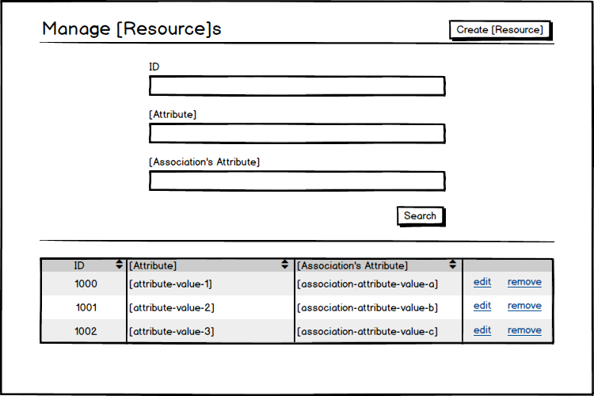

Basic RESTful Filtering with Rails
Filtering a collection of data objects into a subset is one of the most common tasks in data-management applications. While well-tread, this problem space provides rich opportunity for exploring and learning about how to implement RESTful, maintainable, flexible, and robust Rails applications. In this post I want to implement a simple filtering feature, walking through the various aspects at the model, controller, and view layers.
The Feature
Let’s imagine a basic index route for some resource. We have a table for the set of resources, a button to create a new resource, and a search form for selecting a subset of the resources.

We are focusing on that search form. Here are the requirements:
- the search form is composed of 1 to n filter inputs
- each filter input will correspond to a
WHERE :attribute == :valuedatabase query - submitting the search form reloads the index route, displaying the result of the queries
- the search form repopulates the values placed in the filter inputs on reload
- the state of the search form is encoded in the URL
This is a purposefully limited set of requirements; they will provide the foundation for a solid feature while also allowing us to build something focused and precise. In future posts, I plan to expand the functionality.
The Model Layer
We are building this feature for an imagined standard Rails application, so our model layer will be comprised of ActiveRecord classes. We need to add nothing to such classes to allow for WHERE database querying, as the where method inherited from ActiveRecord::Base provides us precisely what we need.
Moreover, the where method allows us to pass a hash of attribute keys and query values, which will make integrating with the controller layer relatively straightfoward as well. Lovely. Thank you, Rails!
The Controller Layer
Our feature requirements state that the query filters need to be encoded in the URL (this is what makes the implementation RESTful), so we know that we will need to work with request parameters. For ease of use and organization, let’s nest each of our query filters under the filter parameter, requiring a controller method like so:
1 2 3 | def filter_params params.fetch(:filter, {}) end |
This method allows the filter parameter namespace to be optional in the URL (contrary to an implementation using params.require(:filter)) and also ensures that the nested parameters are returned (instead of the nested hash returned if we used params.permit(:filter)).
With the request parameters in hand, we can build a basic filter method to use these parameters to scope some ActiveRecord::Relation appropriately. Our logic will be relatively simple for this basic implementation:
- if there are no filter parameters, simply return the passed in
ActiveRecord::Relation - if there are filter parameters, pass then directly into the
wheremethod
1 2 3 4 5 | def filter(relation) return relation unless filter_params.any? relation.where(filter_params) end |
We can now use this method in the #index action of a controller, allowing us to have an index route that works with any or no filter parameters.
1 2 3 | def index @things = filter(Thing.all) end |
With this controller infrastructure in place, we can now handle simple equality attribute filtering on any ActiveRecord resource. In order to complete the feature, however, we need to finalize the view layer.
The View Layer
Our index view, as mocked up above, will have a search/filter form at the top of the page with a results table beneath it. It is this search/filter form that will make the request back to the #index controller action with the appropriate filter params. This means we need to build a form that has inputs with name attributes of the filter[:attribute:] shape. Moreover, this form needs to repopulate the values of those inputs to display back to the user after the form is submitted and the index view is reloaded with the result of the filter query displayed in the table below. So, how can we use Rails to achieve these features?
We are building a form, so we should use the form_for helper. We want to reload the index route on submission, so, instead of making a POST call on submission, let’s make a GET call back to the index route (form_for(some_object, method: :get, url: things_path)). With a FormBuilder object to use, the actual filter inputs are simple; we can use methods like f.text_field(:attribute_name) to generate the filter inputs. This is all standard and stock Rails. The extra bit that we need is the object that we pass into the form_for method. This object needs to give the filter inputs the appropriate param namespace (filter in our case) as well as allow those methods to repopulate the filter inputs with the appropriate value when the index route is reloaded after form submission. So, how do we do that?
Let’s break down the problem into is constituent parts. First, we need an object; that object needs getters for the various filters; those getters need to return values if values were submitted as request parameters to the #index action. Next, that object needs to be used in a form_for method such that the FormBuilder object it creates uses the desired parameter namespace. Let’s focus on the first requirement.
We know that all of our filter values will live under the filter namespace in the request parameters. In both the controller and view layers, we have access to a hash representation of the request parameters using the params method. In our controller, we had a method for accessing the filter params (params.fetch(:filter, {})); we can use this exact logic in the view layer. The issue in our form context, however, is that this gives us a hash and we need an object. So, how can we convert a hash with entries into an object with getters? Well, a common way is to use the OpenStruct class; you can initialize an OpenStruct instance with a hash and it will create an object with getters matching the hash keys:
1 2 | OpenStruct.new(a: 'b') => #<OpenStruct a="b"> |
This solution would work perfectly well if we could guarantee that our params hash would always be a flat hash (i.e. that the values would always be scalar and never a nested hash). We cannot guarantee that, however. So, how can we use OpenStructs with nested hashes? I offer a simple and elegant “hack”: the JSON.parse method. The JSON.parse method converts a JSON-encoded string into a Ruby object, and by default that Ruby object is a Hash; however, you can specify which Ruby object you want to convert the data into, and you can specify OpenStruct as that object:
1 2 | JSON.parse({ a: { b: 'c' } }.to_json, object_class: OpenStruct) => #<OpenStruct a=#<OpenStruct b="c">> |
With this tool at our disposal, we can now create an object that corresponds to the request parameters for our filters, where getters return values if they are present or nil if they are not. Let’s put this logic in a Rails helper module and generalize it to work with any param namespace:
1 2 3 4 5 6 7 8 | module FormForHelper def form_for_object_from_param(param) form_for_params = params.fetch(param, {}) JSON.parse(form_for_params.to_json, object_class: OpenStruct) end end |
With our first requirement met, let’s expand this helper method a bit to meet our second requirement–creating an object where the form_for uses the desired parameter namespace when creating form controls. If you dig into the source code for the form_for method and the FormBuilder object it creates, you will come to learn that it inspects the object it is passed for a #model_name method when constructing input names. It then expects the return value of the #model_name method to respond to the #param_key method (these methods are part of the ActiveModel::Naming module). So, in order for our custom built object to work with form_for the way that we desire, we simply need to ensure that object.model_name.param_key returns the parameter namespace. Given that we are using JSON.parse and OpenStructs to create an object with getters from a nested hash, this is as easy as merging a hash of the appropriate shape into the params hash:
1 2 3 4 5 6 7 8 9 | module FormForHelper def form_for_object_from_param(param) form_for_params = params.fetch(param, {}) form_for_requirements = { model_name: { param_key: param } } JSON.parse(form_for_params.merge(form_for_requirements).to_json, object_class: OpenStruct) end end |
With a mechanism by which we can turn certain request parameters into an object appropriate for use with form_for, let’s build our filters search form:
1 2 3 4 5 6 7 8 9 10 11 12 13 14 15 16 | <%= form_for(form_for_object_from_param(:filter), method: :get, url: things_path, html: { class: 'form' }) do |f| %> <div class="form-group"> <%= f.label(:attribute, class: 'control-label') %> <%= f.text_field(:attribute, class: 'form-control') %> </div> <div class="text-right"> <%= content_tag(:button, 'Search', type: 'submit', class: 'btn btn-info') %> </div> <% end %> |
This is obviously a simplified example, but it is a fully functioning simplified example. We now have a search filter form which will reload an #index route with a matching subset of data objects, where the search form is repopulated with any values used for the search, and where the filters are RESTfully encoded in the URL as parameters.